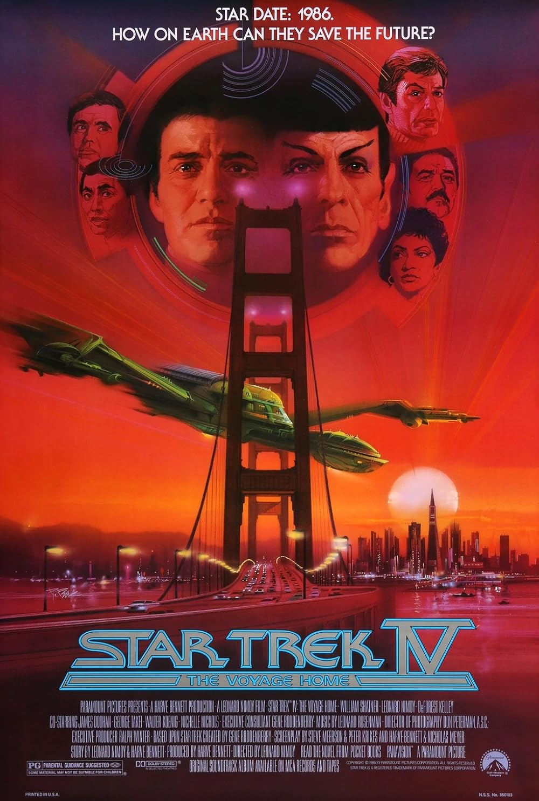

| Watched | ||
|---|---|---|
| Nominations | |||
|---|---|---|---|
| Category | Nominees | Result | Voted |
| Cinematography | Don Peterman | Nominated | |
| Sound | Dave Hudson, Gene S. Cantamessa, Mel Metcalfe, and Terry Porter | Nominated | |
| Sound Effects Editing | Mark Mangini | Nominated | |
| Music (Original Score) | Leonard Rosenman | Nominated | |